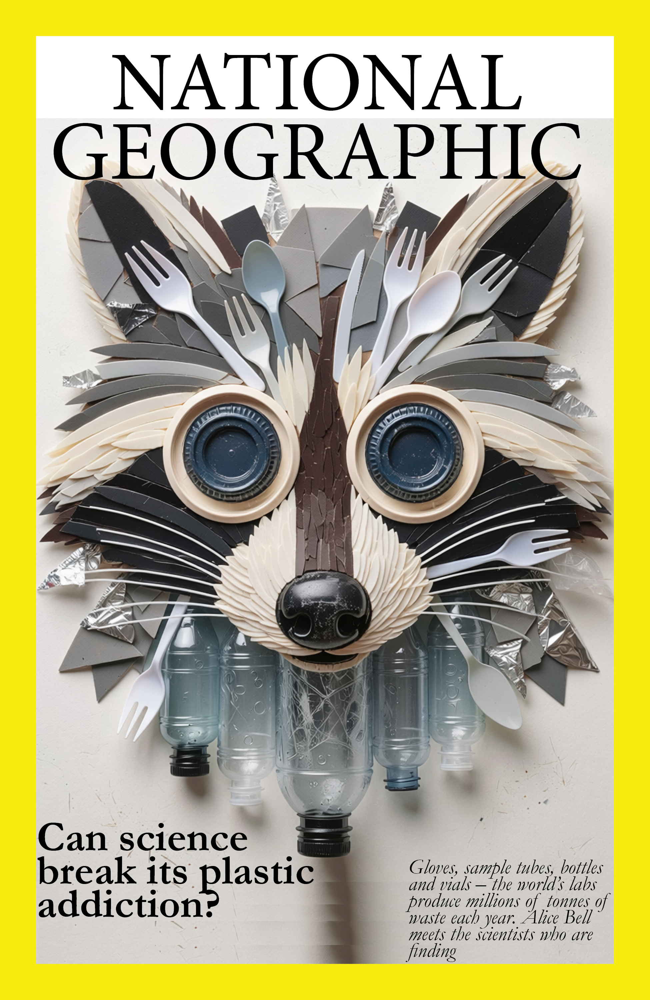
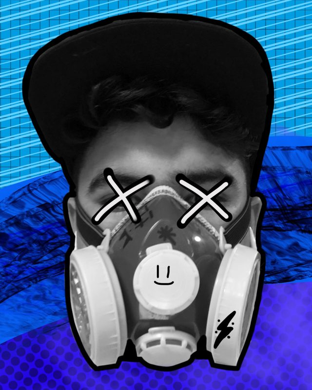
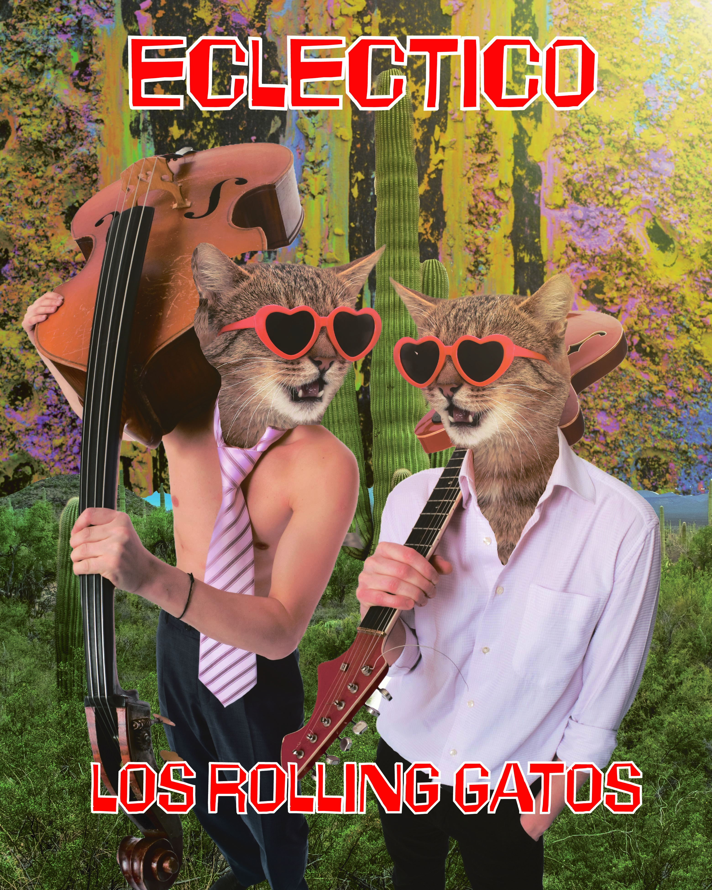
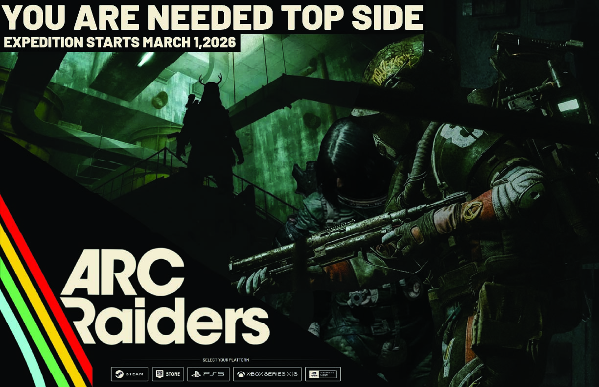
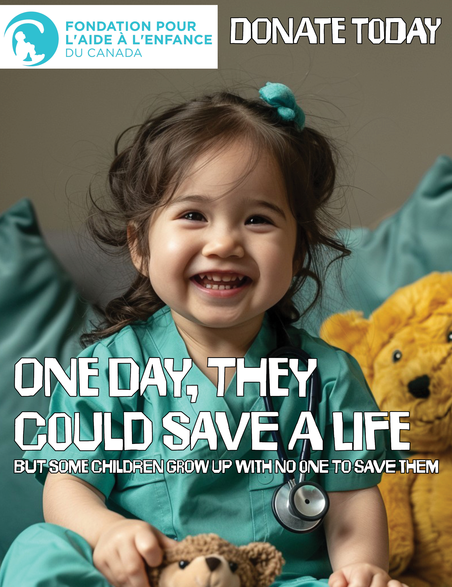
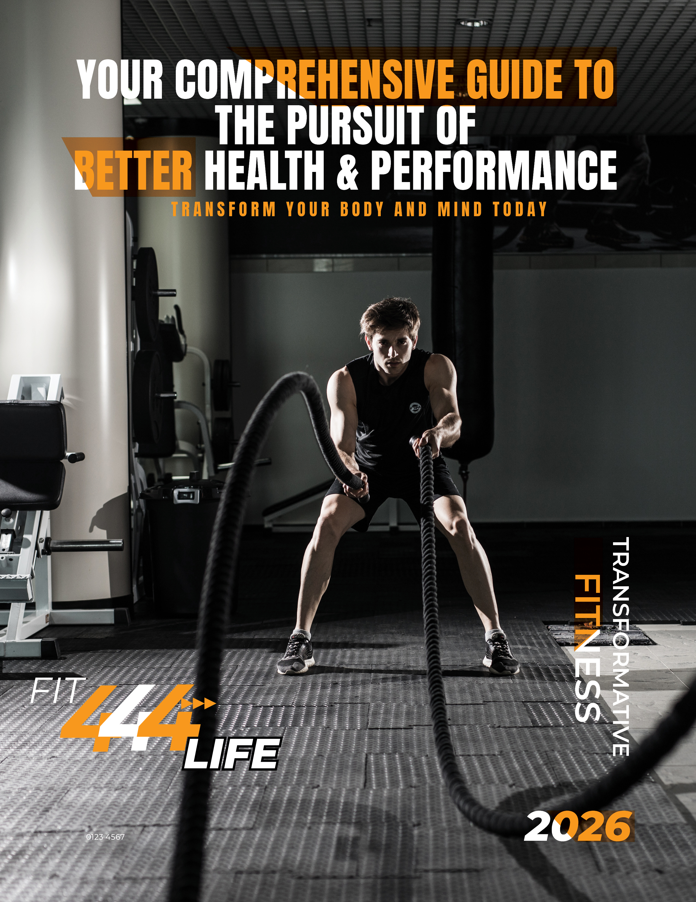

ARTWORK 01
Typography and editorial
National Geographic Cover
A Literal expression of the article at play, can Science solve the plastic crisis. Powerfull messaging in powerfull imagery.
ANDRE HINOJOSA / BHERDNA
A Super Awesome Face slapping creative portfolio exploring graphic design, branding, and extensive color.
SEE THE WORK
ABOUT
I am The one and ONLY Andre Hinojosa, but I also go by another bomb name like Bherdna in the art world. My work is LOUD, unapologetic and shocking. I like visuals that make people go whooooooooooo what is that?? imagine seeing a pig fly, like that.
This portfolio brings together some of my selected work from my studies and creative projects, including branding, digital design and interface work. It also Includes really cool stuff in laiman.
SELECTED WORK
These are some of my selected projects and artworks that originated from my curious mind throughout this program.

ARTWORK 01
Typography and editorial
A Literal expression of the article at play, can Science solve the plastic crisis. Powerfull messaging in powerfull imagery.

ARTWORK 02
Illustrator Album Mockup
A Pshycodelic re imagening of the cult classic hit, Eclectico by the Rolling Gatos. A wild and literal take of the Cats that roll into musical delight.

ARTWORK 03
Indesign Poster design
A charming take on the good ol classic local film festival, The one we have all went to and loved at some point in our lives.

Arc Raiders Poster
GRAPHIC DESIGN and photoshop
A visual representation of the upcoming event in the surprise hit game Arc Raiders. A visual expression of the feeling and vibe of actually playing the game.

Child Charity Poster
GRAPHIC DESIGN and Indesign
A heart pulling image depicitng a serious message to help others. A light hearted image that is meant to pull on our emotions and push towards awareness and donations.

Fitness Infographic
GRAPHIC DESIGN and Indesign
A front cover to a vast and extensive Fitness infographic meant to be used by a local gym. This one was more on the Editorial layout and organization of information.
CONTACT
Want to see more work or get in touch? You can find me as @BHERDNA on most social media.
BHERDNA.COM ↗This portfolio is a static HTML/CSS website created for GDPW 153 — Web Design and Development and also for Carrer & Portfolio Development.